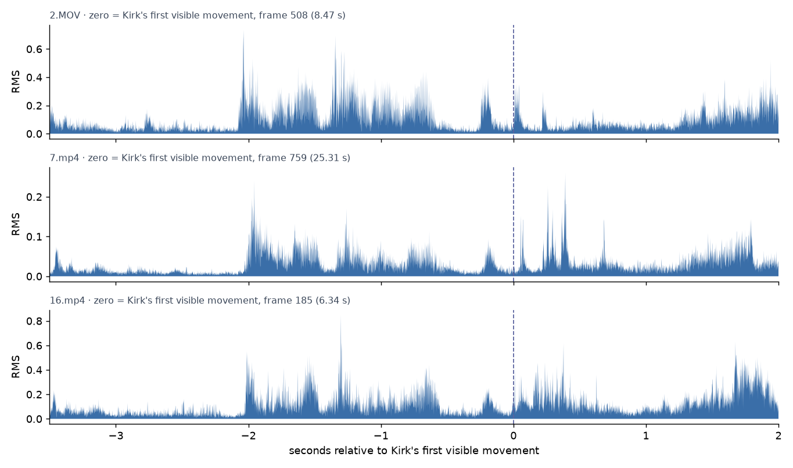
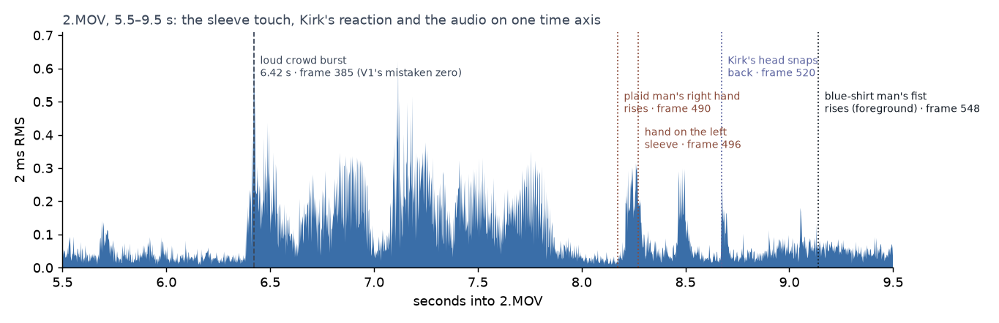
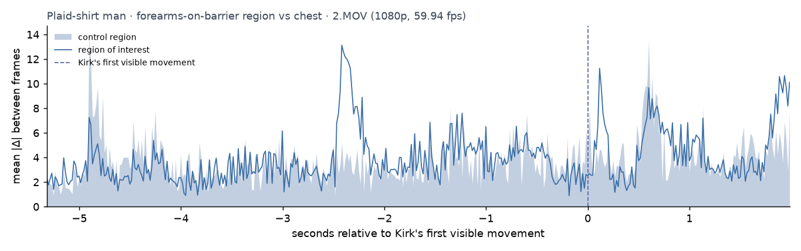
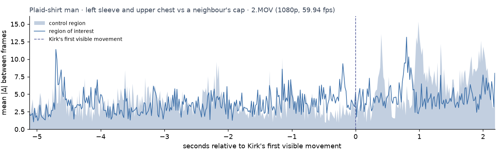
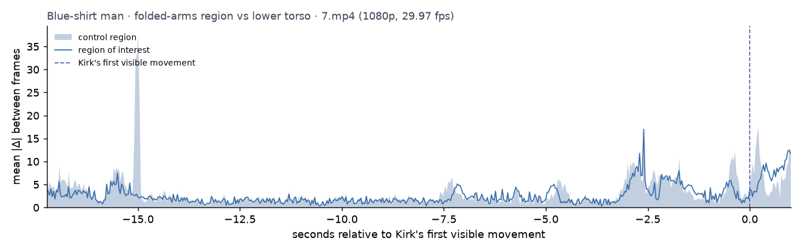
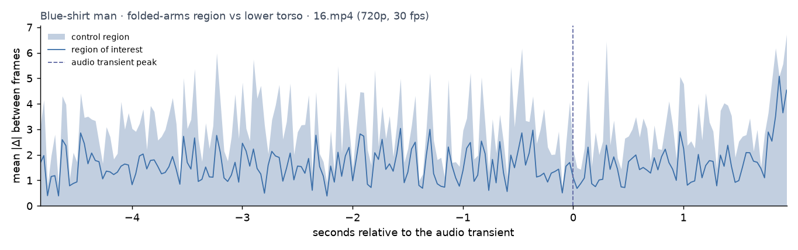
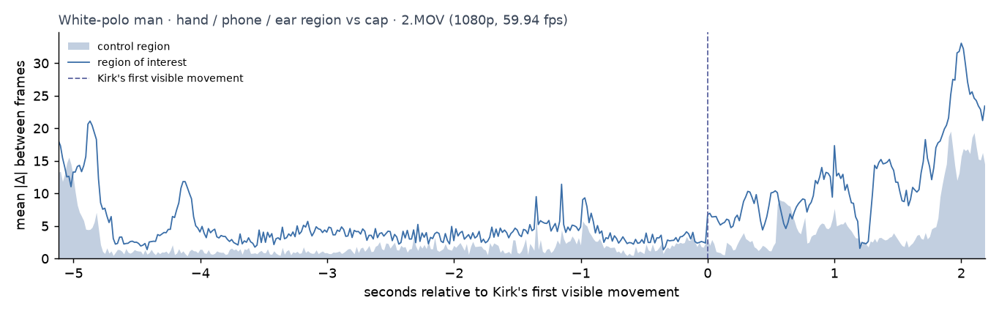
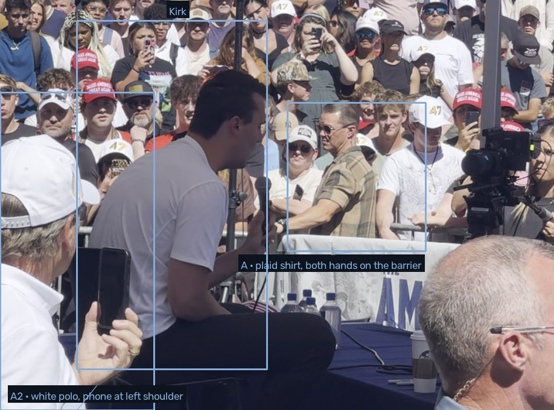
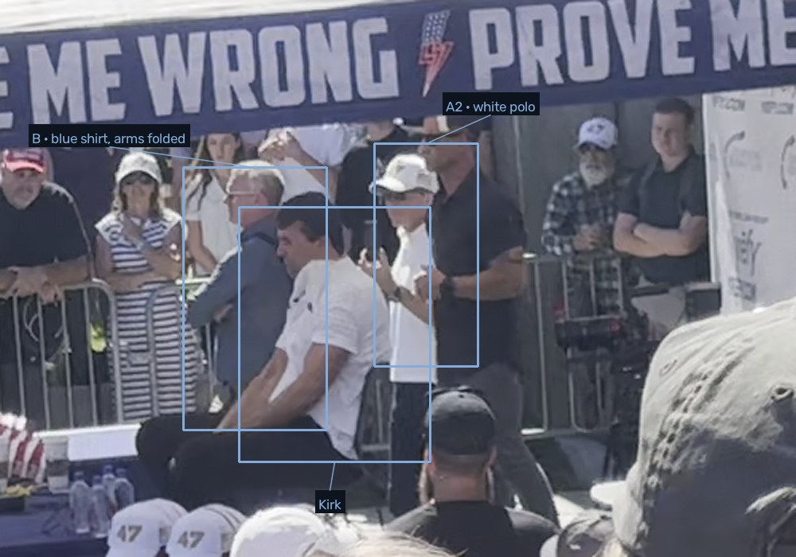
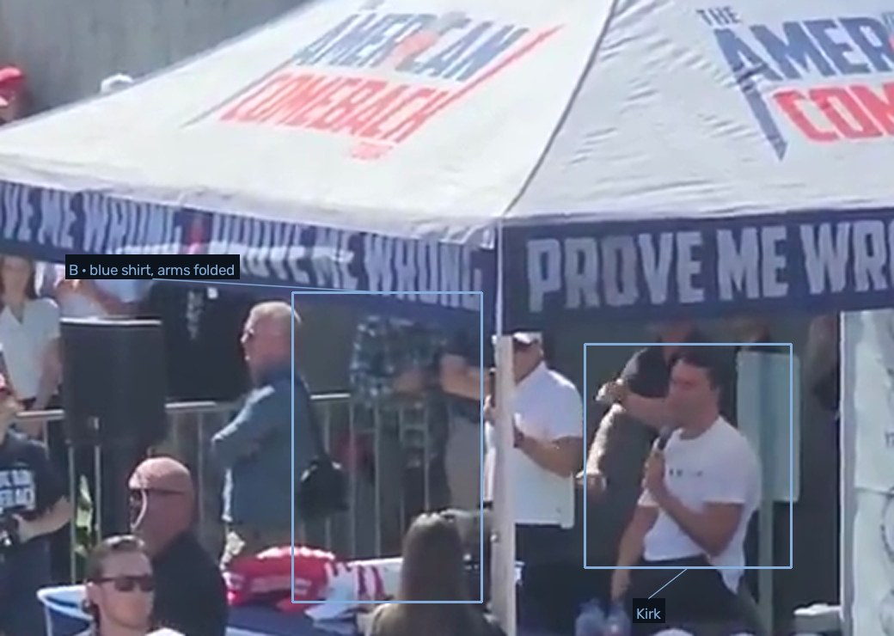

One gesture is before the shot. The other cannot be seen.
Zero on this page is the first frame in which Kirk's head and shoulders move abruptly: frame 508 of 2.MOV, 185 of 16.mp4, 759 of 7.mp4. A larger backward snap of the head follows 0.2 to 0.37 s later. The plaid-shirt man's right hand leaves the barrier rail 0.30 s before that first frame and his index finger is on his left sleeve 0.20 s before it. The blue-shirt man's arms are folded through it, his right hand hidden under his left arm; the pocket where the hand sits is unchanged for 0.2 s after it, and the hand comes out as a fist 0.47 s after it.
The two men, close up, around the moment Kirk moves
Nothing on these frames but the men. The bar underneath is the only annotation: the mark is the first frame in which Kirk's head and shoulders move abruptly, the cursor is the current frame, the number is milliseconds from that mark. Each loop runs at a quarter to a fifth of real speed and pauses on the marked frame. GIF files are linked from each caption.
{kind=link}
{kind=link}
{kind=link}
Time zero: the frame Kirk first moves, checked three ways
By eye, in each clip. Kirk makes two movements a fraction of a second apart. First an abrupt turn of the head with the shoulders, then, 0.2 to 0.37 s later, a larger snap of the head backward with the hair flying. Zero is the first. In 7.mp4, from the front, the head turns sharply in frame 759 (25.306 s) and snaps back in 770. In 16.mp4 the head turns in frame 185 (6.339 s) and snaps in 193. In 2.MOV, from behind, the head and shoulders jerk together in frame 508 (8.473 s) and the head snaps back in 520; his hands come up to his neck from 532. The audio alignment below allows a frame or two earlier in 2.MOV (505–508) and in 16.mp4 (184–185); the frames chosen are the first in which the change is visible, so every "before" figure on this page is, if anything, an underestimate by up to 50 ms.
By sound, across clips. The three recordings share the same speech and crowd noise, so their clocks can be tied together by cross-correlating their audio envelopes over a window that contains no shot. Speech in the 2.5 s before the shot gives 7.mp4 − 2.MOV = 16.879 s (an earlier window gives 16.874 s) and 7.mp4 − 16.mp4 = 18.986 s. Carrying frame 759 of 7.mp4 across those lags predicts Kirk's first movement at 8.43 s in 2.MOV and 6.32 s in 16.mp4; the frames read by eye are at 8.47 s and 6.34 s, 0.05 s and 0.02 s later. The three anchors are the same moment to within two or three frames.
By a second person. The blue-shirt man stands in the right foreground of 2.MOV. 7.mp4 shows his fist rising at frames 773–784 (+0.47 to +0.83 s). In 2.MOV his arm rises at frames 548–556 (+0.67 to +0.80 s), where the lag says it should. No sound is involved in that check.
What the audio says once it is anchored. Relative to the first movement, each file carries the same three impulses: at −0.25, +0.02 and +0.20 s in 2.MOV; +0.07, +0.23 and +0.37 s in 7.mp4; 0.00, +0.23 and +0.37 s in 16.mp4. Kirk's first movement therefore comes 50 to 70 ms before the first sound reaches the two cameras nearest him, which is the order a bullet and its sound arrive in. The loudest sound in 2.MOV is none of these: it is a crowd burst at 6.42 s, 2.05 s before Kirk moves, matching a burst at 23.35 s of 7.mp4 where nothing happens to Kirk. That burst was V1's zero.

{kind=link}
{kind=link}
{kind=link}
{kind=link}
{kind=link}
A · The plaid-shirt man behind the barrier
He is in the front row of the crowd at Kirk's right, leaning on the barrier: sunglasses, a checked olive-and-tan shirt, a watch on his left wrist. The claim is that his right index finger touched his left sleeve just before the shot and that he then pretended to scratch.
Before. From frame 180, when the camera pans onto him (−5.5 s), to frame 489, both hands are on the rail: the left arm crosses his body to the rail with the watch at its wrist, the right hand rests beside it, in front of the woman in the white cap. He looks toward Kirk, turns his head, and does not lift either hand. Motion inside a box around his forearms sits on its control region for the whole of that window except during two camera pans.
The gesture. Frame 490 (−0.30 s): the right hand comes off the rail and rises across his chest. Frames 493–496 (−0.25 to −0.20 s): the index finger, extended, reaches the left upper sleeve. Frames 497–507 (−0.18 to −0.02 s): the rest of the hand settles on the upper arm. Frame 508: Kirk's head and shoulders jerk; frame 520 (+0.20 s): his head snaps back. Frames 508–560 (0 to +0.87 s): the hand stays on the sleeve while Kirk's hands go to his neck; from about 540 (+0.53 s) the fingers curl and reposition in what reads as a scratch or a grip. He turns toward the camera at about +0.8 s with the hand still there.
Against the sound. The first of the three impulses in 2.MOV is at frame 493 (−0.25 s), the second at 509 (+0.02 s), the third at 520 (+0.20 s). The hand starts rising three frames before the first impulse and is on the sleeve as it sounds. Whether the first impulse is the shot itself, the bullet's crack or something else is not settled by this file; what is settled is the order of the visible events.
Mechanics. At 1080p the hand, the sleeve and the finger are resolved. No object, strap, button, wire or change in the sleeve is. The gesture is an observable movement that precedes Kirk's reaction. It is not an identifiable action, and the frames cannot say whether a finger touching cloth pressed anything under it.
{kind=link}
{kind=link}
{kind=link}
{kind=link}
{kind=link}



B · The blue-shirt man with folded arms
He stands inside the barrier behind Kirk's right shoulder: bald, a blue-grey shirt, a bag strap across the chest, arms folded with the right hand tucked under the left arm. Two cameras see him: 7.mp4 from the front for 25 s before the shot, 16.mp4 from behind and to his left for 6.3 s. The claim is that he squeezed something in that right hand while the arms were folded, and unfolded them after the shot.
Before. In 7.mp4 his arms are already folded in the close-up 25 s before Kirk moves and stay folded through the zoom-out and the wide segment. The one movement in the last five seconds is at −2.9 to −2.1 s: he leans and turns his head and upper body toward Kirk, then straightens; the fold does not open. From −2.0 s the folded-arms region measures at the level of his lower torso in both cameras.
The pocket. The place the right hand would be, the shadow under the left forearm, was cut out at 7× from every frame from −0.63 s onward. It does not change from −0.63 s through Kirk's first movement to +0.20 s. At +0.23 s (frame 766) Kirk's right hand and the microphone rise in front of it and cover it until Kirk's hands are at his neck. The right hand appears above the fold as a closed fist at +0.47 s (frame 773), rises to his chin by +0.83 s (784), and from +1.0 s he turns toward Kirk. From behind, in 16.mp4, the left elbow and the bag do not move before or at 0; he turns and drops both hands between +0.43 s and +0.7 s (frames 198–206) and steps toward Kirk.
What that leaves. A squeeze of something held in the hidden hand could happen without any visible change on the outside of a folded arm at this resolution, so the pocket being still through the moment Kirk moves is weak evidence either way. The fist that emerges half a second later is 20 pixels across at its best; whether it holds anything is not resolvable, and no motion toward a pocket or the bag is seen before the camera moves off.
{kind=link}
{kind=link}
{kind=link}
{kind=link}
{kind=link}
{kind=link}
{kind=link}
{kind=link}
{kind=link}
{kind=link}
{kind=link}


A2 · The white-polo man, kept as a control
The 270-pixel copy shows, at Kirk's right, a man in a white polo and white cap whose right hand sits at his left shoulder with a finger extended. Read small, that is a hand scratching an upper arm, and the study's first pass took him for the man in the claim. The original shows what the hand holds: a phone in a dark case, held vertically with the index finger along its edge, from frame 270 (−4.0 s) through Kirk's movement to about frame 560 (+0.87 s), when he lowers it. 7.mp4 shows the same phone at the same shoulder from the front.
His only other hand action is earlier: at frames 212–216 (−4.9 s) the phone is at his right ear; at 217–250 his fingers are at the ear; at 251–263 he takes the phone from the ear and lowers it to the shoulder. The point of keeping him on the page is the method: the same pixels that read as a furtive scratch at 270 pixels read as a phone at 1080.
{kind=link}
{kind=link}
{kind=link}
{kind=link}

The material and its timing integrity
| File | Frame | Rate | Frames | Interval, ms (min–max) | Dupes | Container says | Used for |
|---|---|---|---|---|---|---|---|
| 2.MOV | 1080 × 1920 HEVC | 59.94 | 2,204 | 16.67 (15.0–18.3) | 0 | iPhone 15 Pro, iOS 18.6.2, recorded 2025-09-10 12:23:19 MDT at 40.2775 N 111.7138 W. A camera original. | A, A2, Kirk, B in the foreground |
| 2.mp4 | 270 × 480 H.264 | 59.94 | 2,204 | 16.68 | 0 | Transcode of 2.MOV; audio identical. | Orientation only |
| 16.mp4 | 720 × 1280 H.264 | 30 nominal, 29.49 mean | 299 | 33.34 (32.7–204.1) | 0 | Re-encoded copy written 2025-09-20; the first frame is held 204 ms. | B from behind, Kirk |
| 7.mp4 | 1920 × 1080 H.264 | 29.97 | 1,176 | 33.33 (33.3–35.0) | 0 | Export from a mobile video editor (TEEditor tag), 2025-09-10 18:46:46 UTC, 23 minutes after the shot. | B, A2, Kirk from the front; 26 s before |



The 270-pixel copy the claim was first made from is too small to carry any claim about a hand: a fingertip is under two pixels wide in it. The original resolves fingers, a watch strap and the phone's outline.
What the footage supports, and what it cannot
Observable movements. Established for every hand in view. The plaid-shirt man's right hand leaves the rail 0.30 s before Kirk first moves and is on his left sleeve 0.20 s before; it stays there. The blue-shirt man's fold is unchanged through Kirk's first movement and for 0.2 s after, until Kirk's arm covers it; his right fist is out 0.47 s after. The white-polo man holds a phone.
Identifiable actions. One: the phone. For the plaid-shirt man no object, strap or control is resolved at the sleeve. For the blue-shirt man the right hand is hidden until it emerges, and the emerging fist is not an object.
Purpose. Not addressed. A finger to a sleeve 0.2 s before a gunshot's visible effect, a fist to the chin half a second after it: the footage carries none of the information that would say why.
The claim as stated. "Milliseconds just prior" is supported for the plaid-shirt man as timing: the hand starts 300 ms and the finger lands 200 ms before Kirk's first visible movement, and 50 ms before the first sound reaches that camera. It is not testable for the blue-shirt man, whose hand is out of view. Neither man is shown pressing anything; the first is shown touching his sleeve, which is what the claim describes and also what a scratch looks like.
Two men, one cue. The two movements are not simultaneous: −0.30 s and +0.47 s. The second is inside the window in which everyone in the frame begins to react. The first is not.
What changed between V1, V2 and V3
V1 of this page, published earlier the same day, said the plaid-shirt man's sleeve touch came 1.75 s after the shot. V2 says it came 0.4 to 0.5 s before Kirk's visible reaction. The frames did not change; the zero did.
V1 took the loudest transient in each file as the shot and checked it only against Kirk's microphone hand dropping in 2.MOV. In 2.MOV the loudest transient is a crowd burst at 6.42 s; the microphone lowering a few frames later was Kirk lowering the microphone, not a reaction. Both readings were wrong in the same direction, and the second was taken as confirming the first. The brief's author pointed out that the sleeve contact visibly precedes the shot and that a microphone drop is an unreliable anchor. Cross-correlating the clips' audio showed that 2.MOV's 6.42 s corresponds to 23.35 s in 7.mp4, where nothing happens to Kirk, and that the shot in 2.MOV is at about 8.7 s. Kirk's head snap at frame 520 and the blue-shirt man's fist in the 2.MOV foreground at frames 548–556 both confirmed it without sound.
V2 → V3, same day. V2 marked Kirk's larger backward snap of the head as zero. The brief's author pointed out that the mark sat late against the first jerk of Kirk's head and shoulders, which is visible 0.2 s earlier in 2.MOV (frame 508), 0.27 s earlier in 16.mp4 (185) and 0.37 s earlier in 7.mp4 (759). Those first movements agree with the audio alignment between clips to 0.05 s, better than the snap did, and they sit 50 to 70 ms before the first impulse reaches the nearest cameras. Every time on this page is now relative to the first movement; the snap is listed beside it.
Consequences of V2: the plaid-shirt man's finding is reversed; the blue-shirt man's timing in 16.mp4 moves from "unfolds 1.7 s after" to "unfolds 0.17 s after", which now agrees with 7.mp4; the anchor in every clip is Kirk's visible movement rather than a sound; and the editor's note on study 02, which had faulted that review's timing, is withdrawn: the review's zero for 2.MOV (8.35 s) was 0.3 s early, not 1.9 s late, and its conclusion about the order of events was right. V1's text is kept in the repository history.
Method and reproducibility
Everything on this page is produced by one script from the four files. Frames are decoded once with ffmpeg and never interpolated, sharpened or restored; enlargement is bicubic. A person is followed with a normalised cross-correlation template tracker seeded on a box in one frame; every trajectory is saved with its per-frame match score. A strip cuts the same box relative to the tracked position out of every frame in a window. A motion series is the mean absolute difference between consecutive stabilised crops of a region after a 5 px blur, against a control region on the same person. The anchor is the first frame in which Kirk's head and shoulders move abruptly, read by eye in each clip and recorded in the script; the sync step cross-correlates the clips' audio envelopes and reports how far each anchor sits from the alignment. Full details are in the method note.
inputs/fetch.sh # 2.MOV 2.mp4 16.mp4 7.mp4, checked against SHA256SUMS
python pipeline/s1_video.py extract --clip k1hq # and k1, k2, k3
python pipeline/s1_video.py timing # data/s1/timing.json
python pipeline/s1_video.py audio # data/s1/audio.json: impulses around the anchor
python pipeline/s1_video.py sync # data/s1/sync.json: cross-clip lags vs the video anchors
python pipeline/s1_video.py figures --track # trajectories, motion series, every strip
python pipeline/s1_video.py gifs # the loopsData: data/s1/timing.json, audio.json, sync.json, traj_*.json, motion_*.csv, motion_summary.json. Inputs and checksums: inputs/.